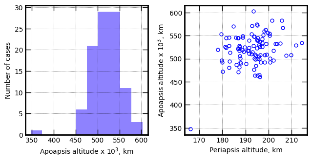
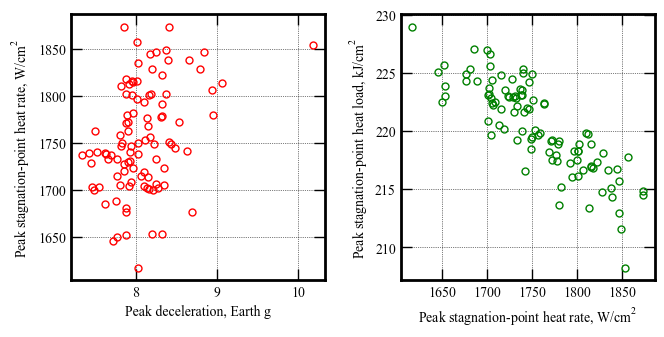
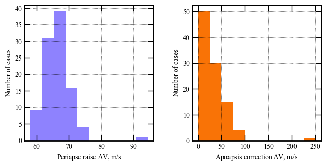
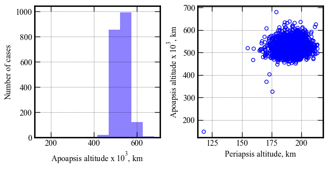
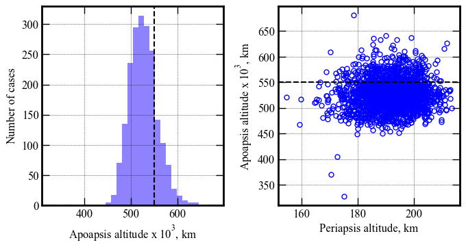
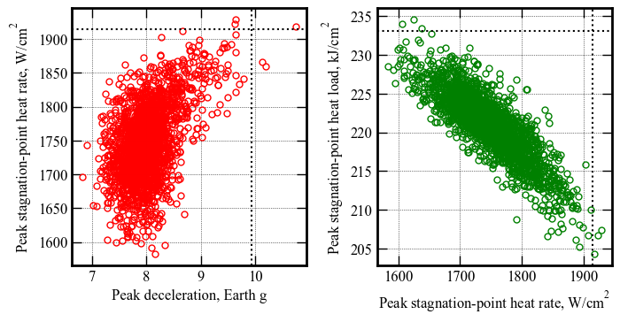
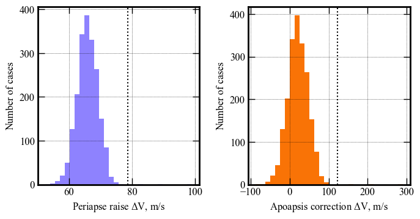

Section 08 - Performance Analysis¶
[7]:
from AMAT.planet import Planet
from AMAT.vehicle import Vehicle
[8]:
import numpy as np
import matplotlib.pyplot as plt
[3]:
planet = Planet('URANUS')
planet.loadAtmosphereModel('../../../atmdata/Uranus/uranus-gram-avg.dat', 0 , 1 ,2, 3, heightInKmFlag=True)
planet.h_skip = 1000.0E3
planet.h_low = 120e3
planet.h_trap = 100e3
[6]:
vehicle=Vehicle('Titania', 3200.0, 146 , 0.24, np.pi*4.5**2.0, 0.0, 1.125, planet)
vehicle.setInitialState(1000.0,-15.22,75.55,29.2877,88.687,-11.7 ,0.0,0.0)
vehicle.setSolverParams(1E-6)
# Set the guidance parameters described in the paper.
# See the function description for parameter details.
# Set max roll rate constraint to 30 deg/s
vehicle.setMaxRollRate(30.0)
# Set Ghdot = 83
# Set Gq = 9.0
# Set v_switch_kms = 16.0 :: this parameter is not really used, and should just be set to low value
# Set low_Alt_km = 120
# Set numPoints_lowAlt = 101
# Set hdot_threshold = -500 m/s
vehicle.setEquilibriumGlideParams(83.0, 9.0, 16.0, 120.0, 101, -500.0)
# Set target orbit parameters
# periapsis = 4000.0 km
# apoapsis = 550,000 km :: set slightly above target (500e3) to account for bias in targeting algorithm
# apoapsis tolerance = 10 km
vehicle.setTargetOrbitParams(4000.0, 550.0E3, 10.0E3)
[7]:
# Set path to atmfiles with randomly perturbed atmosphere files.
atmfiles = ['../../../atmdata/Uranus/perturbed/G-01.txt',
'../../../atmdata/Uranus/perturbed/G-02.txt',
'../../../atmdata/Uranus/perturbed/G-03.txt',
'../../../atmdata/Uranus/perturbed/G-04.txt',
'../../../atmdata/Uranus/perturbed/G-05.txt']
[8]:
vehicle.setupMonteCarloSimulation(1201, 200, atmfiles, 0, 1, 2, 3, 4, True, \
-11.70, 0.10, 0.24, 0.013, 0.5, 0.1, 2400.0)
Small run N = 100¶
[9]:
vehicle.runMonteCarlo2(100, '../../../data/acta-astronautica/uranus-orbiter-probe/MCBX2')
RUN #: 1, SAMPLE #: 190, EFPA: -11.85, SIGMA: 0.45, LD: 0.25, APO : 510506.90
RUN #: 2, SAMPLE #: 73, EFPA: -11.46, SIGMA: 0.62, LD: 0.24, APO : 465139.82
RUN #: 3, SAMPLE #: 86, EFPA: -11.59, SIGMA: -1.18, LD: 0.23, APO : 544976.68
RUN #: 4, SAMPLE #: 3, EFPA: -11.74, SIGMA: -0.25, LD: 0.23, APO : 536170.62
RUN #: 5, SAMPLE #: 155, EFPA: -11.50, SIGMA: -0.03, LD: 0.25, APO : 492317.60
RUN #: 6, SAMPLE #: 110, EFPA: -11.59, SIGMA: 1.21, LD: 0.24, APO : 529249.56
RUN #: 7, SAMPLE #: 199, EFPA: -11.67, SIGMA: 0.37, LD: 0.26, APO : 522288.53
RUN #: 8, SAMPLE #: 177, EFPA: -11.77, SIGMA: 0.10, LD: 0.26, APO : 540324.29
RUN #: 9, SAMPLE #: 166, EFPA: -11.74, SIGMA: 0.91, LD: 0.24, APO : 492239.14
RUN #: 10, SAMPLE #: 83, EFPA: -11.51, SIGMA: -0.59, LD: 0.26, APO : 463737.68
RUN #: 11, SAMPLE #: 99, EFPA: -11.78, SIGMA: -1.13, LD: 0.24, APO : 470871.92
RUN #: 12, SAMPLE #: 108, EFPA: -11.73, SIGMA: 0.92, LD: 0.24, APO : 542551.49
RUN #: 13, SAMPLE #: 126, EFPA: -11.63, SIGMA: 0.91, LD: 0.26, APO : 508812.16
RUN #: 14, SAMPLE #: 39, EFPA: -11.57, SIGMA: 0.85, LD: 0.21, APO : 508994.41
RUN #: 15, SAMPLE #: 134, EFPA: -11.76, SIGMA: 0.13, LD: 0.23, APO : 546330.85
RUN #: 16, SAMPLE #: 153, EFPA: -11.84, SIGMA: -0.08, LD: 0.25, APO : 544739.75
RUN #: 17, SAMPLE #: 147, EFPA: -11.64, SIGMA: 0.31, LD: 0.22, APO : 506077.82
RUN #: 18, SAMPLE #: 184, EFPA: -11.68, SIGMA: 0.22, LD: 0.24, APO : 547867.60
RUN #: 19, SAMPLE #: 142, EFPA: -11.79, SIGMA: 1.24, LD: 0.26, APO : 523547.18
RUN #: 20, SAMPLE #: 143, EFPA: -11.59, SIGMA: 0.36, LD: 0.25, APO : 574786.81
RUN #: 21, SAMPLE #: 112, EFPA: -11.89, SIGMA: 0.53, LD: 0.22, APO : 496569.53
RUN #: 22, SAMPLE #: 81, EFPA: -11.73, SIGMA: -0.63, LD: 0.25, APO : 602529.42
RUN #: 23, SAMPLE #: 181, EFPA: -11.72, SIGMA: 1.28, LD: 0.24, APO : 531759.88
RUN #: 24, SAMPLE #: 104, EFPA: -11.63, SIGMA: 2.22, LD: 0.25, APO : 549642.46
RUN #: 25, SAMPLE #: 64, EFPA: -11.71, SIGMA: 0.34, LD: 0.22, APO : 525983.92
RUN #: 26, SAMPLE #: 12, EFPA: -11.68, SIGMA: -0.45, LD: 0.23, APO : 517945.38
RUN #: 27, SAMPLE #: 173, EFPA: -11.68, SIGMA: 1.04, LD: 0.26, APO : 533137.20
RUN #: 28, SAMPLE #: 89, EFPA: -11.90, SIGMA: -0.54, LD: 0.25, APO : 570118.26
RUN #: 29, SAMPLE #: 2, EFPA: -11.53, SIGMA: 1.45, LD: 0.24, APO : 534110.46
RUN #: 30, SAMPLE #: 7, EFPA: -11.68, SIGMA: 1.20, LD: 0.24, APO : 492384.47
RUN #: 31, SAMPLE #: 27, EFPA: -11.63, SIGMA: 0.29, LD: 0.25, APO : 484723.59
RUN #: 32, SAMPLE #: 144, EFPA: -11.74, SIGMA: -0.51, LD: 0.24, APO : 554503.01
RUN #: 33, SAMPLE #: 182, EFPA: -11.65, SIGMA: 1.63, LD: 0.21, APO : 562402.87
RUN #: 34, SAMPLE #: 61, EFPA: -11.55, SIGMA: 0.32, LD: 0.24, APO : 538244.31
RUN #: 35, SAMPLE #: 140, EFPA: -11.87, SIGMA: 0.41, LD: 0.24, APO : 527836.89
RUN #: 36, SAMPLE #: 146, EFPA: -11.79, SIGMA: 0.87, LD: 0.24, APO : 517958.21
RUN #: 37, SAMPLE #: 110, EFPA: -11.68, SIGMA: -1.83, LD: 0.24, APO : 492572.60
RUN #: 38, SAMPLE #: 143, EFPA: -11.58, SIGMA: 0.07, LD: 0.24, APO : 570917.77
RUN #: 39, SAMPLE #: 147, EFPA: -11.54, SIGMA: 1.31, LD: 0.24, APO : 544505.80
RUN #: 40, SAMPLE #: 197, EFPA: -11.69, SIGMA: 0.32, LD: 0.23, APO : 528213.01
RUN #: 41, SAMPLE #: 171, EFPA: -11.63, SIGMA: -1.85, LD: 0.23, APO : 480542.98
RUN #: 42, SAMPLE #: 59, EFPA: -11.59, SIGMA: 0.18, LD: 0.22, APO : 496784.46
RUN #: 43, SAMPLE #: 18, EFPA: -11.65, SIGMA: -0.66, LD: 0.24, APO : 504758.61
RUN #: 44, SAMPLE #: 168, EFPA: -11.63, SIGMA: 1.34, LD: 0.22, APO : 531863.87
RUN #: 45, SAMPLE #: 114, EFPA: -11.70, SIGMA: 0.59, LD: 0.27, APO : 528354.69
RUN #: 46, SAMPLE #: 18, EFPA: -11.65, SIGMA: -1.02, LD: 0.22, APO : 507388.25
RUN #: 47, SAMPLE #: 72, EFPA: -11.78, SIGMA: -0.36, LD: 0.26, APO : 572567.61
RUN #: 48, SAMPLE #: 128, EFPA: -11.72, SIGMA: -0.96, LD: 0.25, APO : 525557.51
RUN #: 49, SAMPLE #: 36, EFPA: -11.78, SIGMA: 1.32, LD: 0.27, APO : 540054.16
RUN #: 50, SAMPLE #: 43, EFPA: -11.70, SIGMA: 0.05, LD: 0.22, APO : 460287.34
RUN #: 51, SAMPLE #: 197, EFPA: -11.62, SIGMA: -0.75, LD: 0.24, APO : 514034.21
RUN #: 52, SAMPLE #: 42, EFPA: -11.76, SIGMA: -0.83, LD: 0.25, APO : 498574.42
RUN #: 53, SAMPLE #: 46, EFPA: -11.65, SIGMA: 2.13, LD: 0.24, APO : 566846.32
RUN #: 54, SAMPLE #: 128, EFPA: -11.80, SIGMA: 0.43, LD: 0.24, APO : 525392.86
RUN #: 55, SAMPLE #: 21, EFPA: -11.78, SIGMA: -0.57, LD: 0.24, APO : 511482.33
RUN #: 56, SAMPLE #: 23, EFPA: -11.61, SIGMA: 0.82, LD: 0.24, APO : 499601.24
RUN #: 57, SAMPLE #: 184, EFPA: -11.82, SIGMA: 0.25, LD: 0.23, APO : 499599.26
RUN #: 58, SAMPLE #: 4, EFPA: -11.72, SIGMA: 0.32, LD: 0.24, APO : 515233.00
RUN #: 59, SAMPLE #: 60, EFPA: -11.71, SIGMA: 0.59, LD: 0.25, APO : 508129.67
RUN #: 60, SAMPLE #: 109, EFPA: -11.59, SIGMA: -0.29, LD: 0.27, APO : 489226.85
RUN #: 61, SAMPLE #: 95, EFPA: -11.81, SIGMA: -0.69, LD: 0.26, APO : 476709.75
RUN #: 62, SAMPLE #: 176, EFPA: -11.74, SIGMA: 0.31, LD: 0.22, APO : 534106.83
RUN #: 63, SAMPLE #: 111, EFPA: -11.49, SIGMA: 0.55, LD: 0.25, APO : 507653.04
RUN #: 64, SAMPLE #: 194, EFPA: -11.85, SIGMA: 0.36, LD: 0.25, APO : 517941.04
RUN #: 65, SAMPLE #: 95, EFPA: -11.85, SIGMA: 1.85, LD: 0.23, APO : 518139.18
RUN #: 66, SAMPLE #: 32, EFPA: -11.64, SIGMA: 0.33, LD: 0.22, APO : 528945.71
RUN #: 67, SAMPLE #: 37, EFPA: -11.84, SIGMA: -1.15, LD: 0.25, APO : 546202.23
RUN #: 68, SAMPLE #: 158, EFPA: -11.75, SIGMA: 1.65, LD: 0.25, APO : 532350.02
RUN #: 69, SAMPLE #: 122, EFPA: -11.64, SIGMA: -1.24, LD: 0.21, APO : 544954.64
RUN #: 70, SAMPLE #: 4, EFPA: -11.61, SIGMA: -1.67, LD: 0.26, APO : 523790.15
RUN #: 71, SAMPLE #: 71, EFPA: -11.69, SIGMA: 1.70, LD: 0.25, APO : 582421.67
RUN #: 72, SAMPLE #: 19, EFPA: -11.71, SIGMA: -0.07, LD: 0.24, APO : 548126.33
RUN #: 73, SAMPLE #: 167, EFPA: -11.77, SIGMA: -0.82, LD: 0.24, APO : 522176.80
RUN #: 74, SAMPLE #: 97, EFPA: -11.56, SIGMA: 1.52, LD: 0.24, APO : 583125.00
RUN #: 75, SAMPLE #: 75, EFPA: -11.48, SIGMA: -0.77, LD: 0.25, APO : 513578.76
RUN #: 76, SAMPLE #: 39, EFPA: -11.65, SIGMA: -0.55, LD: 0.22, APO : 481964.62
RUN #: 77, SAMPLE #: 74, EFPA: -11.80, SIGMA: -0.13, LD: 0.24, APO : 524390.82
RUN #: 78, SAMPLE #: 63, EFPA: -12.00, SIGMA: 2.23, LD: 0.26, APO : 347935.73
RUN #: 79, SAMPLE #: 120, EFPA: -11.72, SIGMA: 0.04, LD: 0.22, APO : 551329.59
RUN #: 80, SAMPLE #: 188, EFPA: -11.63, SIGMA: 0.29, LD: 0.24, APO : 492592.05
RUN #: 81, SAMPLE #: 61, EFPA: -11.80, SIGMA: 0.04, LD: 0.25, APO : 489985.77
RUN #: 82, SAMPLE #: 148, EFPA: -11.72, SIGMA: 1.11, LD: 0.25, APO : 463367.51
RUN #: 83, SAMPLE #: 95, EFPA: -11.81, SIGMA: 0.44, LD: 0.23, APO : 486797.23
RUN #: 84, SAMPLE #: 145, EFPA: -11.70, SIGMA: 1.08, LD: 0.25, APO : 517092.50
RUN #: 85, SAMPLE #: 169, EFPA: -11.61, SIGMA: -1.85, LD: 0.25, APO : 471696.18
RUN #: 86, SAMPLE #: 82, EFPA: -11.78, SIGMA: 0.47, LD: 0.24, APO : 553695.03
RUN #: 87, SAMPLE #: 195, EFPA: -11.66, SIGMA: 2.04, LD: 0.24, APO : 506708.57
RUN #: 88, SAMPLE #: 79, EFPA: -11.66, SIGMA: -0.20, LD: 0.23, APO : 549320.06
RUN #: 89, SAMPLE #: 134, EFPA: -11.78, SIGMA: 0.19, LD: 0.24, APO : 500674.51
RUN #: 90, SAMPLE #: 9, EFPA: -11.68, SIGMA: -0.74, LD: 0.22, APO : 553652.39
RUN #: 91, SAMPLE #: 50, EFPA: -11.75, SIGMA: 0.36, LD: 0.25, APO : 546134.76
RUN #: 92, SAMPLE #: 124, EFPA: -11.79, SIGMA: -1.75, LD: 0.21, APO : 519881.03
RUN #: 93, SAMPLE #: 48, EFPA: -11.82, SIGMA: -0.00, LD: 0.21, APO : 526352.46
RUN #: 94, SAMPLE #: 166, EFPA: -11.86, SIGMA: 1.50, LD: 0.23, APO : 494069.70
RUN #: 95, SAMPLE #: 97, EFPA: -11.60, SIGMA: 0.71, LD: 0.28, APO : 556518.77
RUN #: 96, SAMPLE #: 40, EFPA: -11.67, SIGMA: -0.34, LD: 0.23, APO : 507922.31
RUN #: 97, SAMPLE #: 195, EFPA: -11.79, SIGMA: 0.28, LD: 0.24, APO : 500203.26
RUN #: 98, SAMPLE #: 132, EFPA: -11.63, SIGMA: 0.78, LD: 0.24, APO : 500503.30
RUN #: 99, SAMPLE #: 119, EFPA: -11.54, SIGMA: 0.28, LD: 0.25, APO : 559653.70
RUN #: 100, SAMPLE #: 137, EFPA: -11.74, SIGMA: -0.10, LD: 0.23, APO : 521209.20
[10]:
p1 = np.loadtxt('../../../data/acta-astronautica/uranus-orbiter-probe/MCBX2/terminal_periapsis_arr.txt')
x1 = np.loadtxt('../../../data/acta-astronautica/uranus-orbiter-probe/MCBX2/terminal_apoapsis_arr.txt')
y1 = np.loadtxt('../../../data/acta-astronautica/uranus-orbiter-probe/MCBX2/acc_net_g_max_arr.txt')
z1 = np.loadtxt('../../../data/acta-astronautica/uranus-orbiter-probe/MCBX2/q_stag_max_arr.txt')
h1 = np.loadtxt('../../../data/acta-astronautica/uranus-orbiter-probe/MCBX2/heatload_max_arr.txt')
u1 = np.loadtxt('../../../data/acta-astronautica/uranus-orbiter-probe/MCBX2/periapsis_raise_DV_arr.txt')
v1 = np.loadtxt('../../../data/acta-astronautica/uranus-orbiter-probe/MCBX2/apoapsis_raise_DV_arr.txt')
[11]:
fig, axes = plt.subplots(1, 2, figsize = (6.5, 3.25))
plt.rc('font',family='Times New Roman')
params = {'mathtext.default': 'regular' }
plt.rcParams.update(params)
fig.tight_layout()
plt.subplots_adjust(wspace=0.30)
axes[0].hist(x1/1000.0, bins=10, color='xkcd:periwinkle')
axes[0].set_xlabel('Apoapsis altitude x '+r'$10^3$'+', km', fontsize=10)
axes[0].set_ylabel('Number of cases', fontsize=10)
axes[0].tick_params(direction='in')
axes[0].yaxis.set_ticks_position('both')
axes[0].xaxis.set_ticks_position('both')
axes[0].tick_params(axis='x',labelsize=10)
axes[0].tick_params(axis='y',labelsize=10)
axes[1].plot(p1, x1/1000.0, 'bo', markersize=5, mfc='None')
axes[1].set_xlabel('Periapsis altitude, km',fontsize=10)
axes[1].set_ylabel('Apoapsis altitude x '+r'$10^3$'+', km', fontsize=10)
axes[1].tick_params(direction='in')
axes[1].yaxis.set_ticks_position('both')
axes[1].xaxis.set_ticks_position('both')
axes[1].tick_params(axis='x',labelsize=10)
axes[1].tick_params(axis='y',labelsize=10)
for ax in axes:
ax.xaxis.set_tick_params(direction='in', which='both')
ax.yaxis.set_tick_params(direction='in', which='both')
ax.xaxis.set_tick_params(width=1, length=8)
ax.yaxis.set_tick_params(width=1, length=8)
ax.xaxis.set_tick_params(width=1, length=6, which='minor')
ax.yaxis.set_tick_params(width=1, length=6, which='minor')
ax.xaxis.grid(which='major', color='k', linestyle='dotted', linewidth=0.5)
ax.xaxis.grid(which='minor', color='k', linestyle='dotted', linewidth=0.0)
ax.yaxis.grid(which='major', color='k', linestyle='dotted', linewidth=0.5)
ax.yaxis.grid(which='minor', color='k', linestyle='dotted', linewidth=0.0)
for axis in ['top', 'bottom', 'left', 'right']:
ax.spines[axis].set_linewidth(2)
plt.show()

[12]:
fig, axes = plt.subplots(1, 2, figsize = (6.5, 3.25))
plt.rc('font',family='Times New Roman')
params = {'mathtext.default': 'regular' }
plt.rcParams.update(params)
fig.tight_layout()
plt.subplots_adjust(wspace=0.30)
axes[0].plot(y1, z1, 'ro', markersize=5, mfc='None')
axes[0].set_xlabel('Peak deceleration, Earth g', fontsize=10)
axes[0].set_ylabel('Peak stagnation-point heat rate, '+r'$W/cm^2$', fontsize=10)
axes[0].tick_params(direction='in')
axes[0].yaxis.set_ticks_position('both')
axes[0].xaxis.set_ticks_position('both')
axes[0].tick_params(axis='x',labelsize=10)
axes[0].tick_params(axis='y',labelsize=10)
axes[1].plot(z1, h1, 'go', markersize=5, mfc='None')
axes[1].set_xlabel('Peak stagnation-point heat rate, '+r'$W/cm^2$', fontsize=10)
axes[1].set_ylabel('Peak stagnation-point heat load, '+r'$kJ/cm^2$', fontsize=10)
axes[1].tick_params(direction='in')
axes[1].yaxis.set_ticks_position('both')
axes[1].xaxis.set_ticks_position('both')
axes[1].tick_params(axis='x',labelsize=10)
axes[1].tick_params(axis='y',labelsize=10)
for ax in axes:
ax.xaxis.set_tick_params(direction='in', which='both')
ax.yaxis.set_tick_params(direction='in', which='both')
ax.xaxis.set_tick_params(width=1, length=8)
ax.yaxis.set_tick_params(width=1, length=8)
ax.xaxis.set_tick_params(width=1, length=6, which='minor')
ax.yaxis.set_tick_params(width=1, length=6, which='minor')
ax.xaxis.grid(which='major', color='k', linestyle='dotted', linewidth=0.5)
ax.xaxis.grid(which='minor', color='k', linestyle='dotted', linewidth=0.0)
ax.yaxis.grid(which='major', color='k', linestyle='dotted', linewidth=0.5)
ax.yaxis.grid(which='minor', color='k', linestyle='dotted', linewidth=0.0)
for axis in ['top', 'bottom', 'left', 'right']:
ax.spines[axis].set_linewidth(2)
plt.show()

[13]:
fig, axes = plt.subplots(1, 2, figsize = (6.5, 3.25))
plt.rc('font',family='Times New Roman')
params = {'mathtext.default': 'regular' }
plt.rcParams.update(params)
fig.tight_layout()
plt.subplots_adjust(wspace=0.30)
axes[0].hist(u1, bins=10, color='xkcd:periwinkle')
axes[0].set_xlabel('Periapse raise '+r'$\Delta V$'+', m/s', fontsize=10)
axes[0].set_ylabel('Number of cases', fontsize=10)
axes[0].tick_params(direction='in')
axes[0].yaxis.set_ticks_position('both')
axes[0].xaxis.set_ticks_position('both')
axes[0].tick_params(axis='x',labelsize=10)
axes[0].tick_params(axis='y',labelsize=10)
axes[1].hist(np.abs(v1), bins=10, color='xkcd:orange')
axes[1].set_xlabel('Apoapsis correction '+r'$\Delta V$'+', m/s', fontsize=10)
axes[1].set_ylabel('Number of cases', fontsize=10)
axes[1].tick_params(direction='in')
axes[1].yaxis.set_ticks_position('both')
axes[1].xaxis.set_ticks_position('both')
axes[1].tick_params(axis='x',labelsize=10)
axes[1].tick_params(axis='y',labelsize=10)
for ax in axes:
ax.xaxis.set_tick_params(direction='in', which='both')
ax.yaxis.set_tick_params(direction='in', which='both')
ax.xaxis.set_tick_params(width=1, length=8)
ax.yaxis.set_tick_params(width=1, length=8)
ax.xaxis.set_tick_params(width=1, length=6, which='minor')
ax.yaxis.set_tick_params(width=1, length=6, which='minor')
ax.xaxis.grid(which='major', color='k', linestyle='dotted', linewidth=0.5)
ax.xaxis.grid(which='minor', color='k', linestyle='dotted', linewidth=0.0)
ax.yaxis.grid(which='major', color='k', linestyle='dotted', linewidth=0.5)
ax.yaxis.grid(which='minor', color='k', linestyle='dotted', linewidth=0.0)
for axis in ['top', 'bottom', 'left', 'right']:
ax.spines[axis].set_linewidth(2)
plt.show()

Production run N = 2000¶
Run the file 08-performance-analysis-prd.py to do 2000 Monte Carlo runs. The output logs from the run are in 08-production-log.txt. The aggregate data from the data/acta-astronautica/uranus-orbiter-probe/MCB/.
[13]:
p1 = np.loadtxt('../../../data/acta-astronautica/uranus-orbiter-probe/MCB/terminal_periapsis_arr.txt')
x1 = np.loadtxt('../../../data/acta-astronautica/uranus-orbiter-probe/MCB/terminal_apoapsis_arr.txt')
y1 = np.loadtxt('../../../data/acta-astronautica/uranus-orbiter-probe/MCB/acc_net_g_max_arr.txt')
z1 = np.loadtxt('../../../data/acta-astronautica/uranus-orbiter-probe/MCB/q_stag_max_arr.txt')
h1 = np.loadtxt('../../../data/acta-astronautica/uranus-orbiter-probe/MCB/heatload_max_arr.txt')
u1 = np.loadtxt('../../../data/acta-astronautica/uranus-orbiter-probe/MCB/periapsis_raise_DV_arr.txt')
v1 = np.loadtxt('../../../data/acta-astronautica/uranus-orbiter-probe/MCB/apoapsis_raise_DV_arr.txt')
[5]:
fig, axes = plt.subplots(1, 2, figsize = (6.5, 3.25))
plt.rc('font',family='Times New Roman')
params = {'mathtext.default': 'regular' }
plt.rcParams.update(params)
fig.tight_layout()
plt.subplots_adjust(wspace=0.30)
axes[0].hist(x1/1000.0, bins=10, color='xkcd:periwinkle')
axes[0].set_xlabel('Apoapsis altitude x '+r'$10^3$'+', km', fontsize=12)
axes[0].set_ylabel('Number of cases', fontsize=12)
axes[0].tick_params(direction='in')
axes[0].yaxis.set_ticks_position('both')
axes[0].xaxis.set_ticks_position('both')
axes[0].tick_params(axis='x',labelsize=12)
axes[0].tick_params(axis='y',labelsize=12)
axes[1].plot(p1, x1/1000.0, 'bo', markersize=5, mfc='None')
axes[1].set_xlabel('Periapsis altitude, km',fontsize=12)
axes[1].set_ylabel('Apoapsis altitude x '+r'$10^3$'+', km', fontsize=12)
axes[1].tick_params(direction='in')
axes[1].yaxis.set_ticks_position('both')
axes[1].xaxis.set_ticks_position('both')
axes[1].tick_params(axis='x',labelsize=12)
axes[1].tick_params(axis='y',labelsize=12)
for ax in axes:
ax.xaxis.set_tick_params(direction='in', which='both')
ax.yaxis.set_tick_params(direction='in', which='both')
ax.xaxis.set_tick_params(width=1, length=8)
ax.yaxis.set_tick_params(width=1, length=8)
ax.xaxis.set_tick_params(width=1, length=6, which='minor')
ax.yaxis.set_tick_params(width=1, length=6, which='minor')
ax.xaxis.grid(which='major', color='k', linestyle='dotted', linewidth=0.5)
ax.xaxis.grid(which='minor', color='k', linestyle='dotted', linewidth=0.0)
ax.yaxis.grid(which='major', color='k', linestyle='dotted', linewidth=0.5)
ax.yaxis.grid(which='minor', color='k', linestyle='dotted', linewidth=0.0)
for axis in ['top', 'bottom', 'left', 'right']:
ax.spines[axis].set_linewidth(2)
plt.show()

The one case with apoapsis below 200,000 km is an outlier. We will investigate which run this corresponded to.
Remove outlier case¶
[6]:
np.argmin(x1)
[6]:
1308
Let us look at the log line for Run #1309
RUN #: 1309, SAMPLE #: 183, EFPA: -11.52, SIGMA: -2.51, LD: 0.25, APO : 149053.24
This is a shallow entry (+1.8:math:sigma), with low atmospheric mean density (-2.51:math:sigma). We make a note of this outlier, and remove it from the plots for better visualization.
[18]:
p1 = np.delete(p1, 1308)
x1 = np.delete(x1, 1308)
y1 = np.delete(y1, 1308)
z1 = np.delete(z1, 1308)
h1 = np.delete(h1, 1308)
u1 = np.delete(u1, 1308)
v1 = np.delete(v1, 1308)
[19]:
print("--------------------------------------------------------------------------------------------------------")
print("Parameter | Min. 0.13-percentile Mean 99.87-percentile Max")
print("--------------------------------------------------------------------------------------------------------")
print("Apoapsis altitude, km | " + str(round(np.min(x1))) + " " + str(round(np.percentile(x1, 0.13))) +\
" " + str(round(np.average(x1))) +
" " + str(round(np.percentile(x1, 99.87)))+\
" " + str(round(np.max(x1))))
print("Periapsis altitude, km | " + str(round(np.min(p1))) + " " + str(round(np.percentile(p1, 0.13))) +\
" " + str(round(np.average(p1))) +
" " + str(round(np.percentile(p1, 99.87)))+\
" " + str(round(np.max(p1))))
print("Peak deceleration, g | " + str(round(np.min(y1), 2)) + " " + str(round(np.percentile(y1, 0.13), 2)) +\
" " + str(round(np.average(y1), 2)) +
" " + str(round(np.percentile(y1, 99.87), 2))+\
" " + str(round(np.max(y1), 2)))
print("Peak heat rate, W/cm2 | " + str(round(np.min(z1))) + " " + str(round(np.percentile(z1, 0.13))) +\
" " + str(round(np.average(z1))) +
" " + str(round(np.percentile(z1, 99.87)))+\
" " + str(round(np.max(z1))))
print("Peak heat load, kJ/cm2 | " + str(round(np.min(h1))) + " " + str(round(np.percentile(h1, 0.13))) +\
" " + str(round(np.average(h1))) +
" " + str(round(np.percentile(h1, 99.87)))+\
" " + str(round(np.max(h1))))
print("Periapsis raise dV, m/s| " + str(round(np.min(u1), 2)) + " " + str(round(np.percentile(u1, 0.13), 2)) +\
" " + str(round(np.average(u1), 2)) +
" " + str(round(np.percentile(u1, 99.87), 2))+\
" " + str(round(np.max(u1), 2)))
print("Apoapsis corr. dV, m/s | " + str(round(np.min(v1), 2)) + " " + str(round(np.percentile(v1, 0.13), 2)) +\
" " + str(round(np.average(v1), 2)) +
" " + str(round(np.percentile(v1, 99.87), 2))+\
" " + str(round(np.max(v1), 2)))
print("--------------------------------------------------------------------------------------------------------")
--------------------------------------------------------------------------------------------------------
Parameter | Min. 0.13-percentile Mean 99.87-percentile Max
--------------------------------------------------------------------------------------------------------
Apoapsis altitude, km | 327575 430906 526466 636097 680611
Periapsis altitude, km | 155 163 192 213 213
Peak deceleration, g | 6.84 7.06 8.01 9.93 10.75
Peak heat rate, W/cm2 | 1583 1597 1747 1914 1928
Peak heat load, kJ/cm2 | 204 206 221 233 235
Periapsis raise dV, m/s| 52.33 55.45 65.83 78.71 99.09
Apoapsis corr. dV, m/s | -87.83 -61.66 21.5 123.21 290.38
--------------------------------------------------------------------------------------------------------
[20]:
fig, axes = plt.subplots(1, 2, figsize = (6.75, 3.5))
plt.rc('font',family='Times New Roman')
params = {'mathtext.default': 'regular' }
plt.rcParams.update(params)
fig.tight_layout()
plt.subplots_adjust(wspace=0.30)
axes[0].axvline(x=550.0, linewidth=1.5, color='k', linestyle='dashed')
axes[0].hist(x1/1000.0, bins=30, color='xkcd:periwinkle')
axes[0].set_xlabel('Apoapsis altitude x '+r'$10^3$'+', km', fontsize=12)
axes[0].set_ylabel('Number of cases', fontsize=12)
axes[0].tick_params(direction='in')
axes[0].yaxis.set_ticks_position('both')
axes[0].xaxis.set_ticks_position('both')
axes[0].tick_params(axis='x',labelsize=12)
axes[0].tick_params(axis='y',labelsize=12)
axes[1].plot(p1, x1/1000.0, 'bo', markersize=5, mfc='None')
axes[1].axhline(y=550.0, linewidth=1.5, color='k', linestyle='dashed')
axes[1].set_xlabel('Periapsis altitude, km',fontsize=12)
axes[1].set_ylabel('Apoapsis altitude x '+r'$10^3$'+', km', fontsize=12)
axes[1].tick_params(direction='in')
axes[1].yaxis.set_ticks_position('both')
axes[1].xaxis.set_ticks_position('both')
axes[1].tick_params(axis='x',labelsize=12)
axes[1].tick_params(axis='y',labelsize=12)
for ax in axes:
ax.xaxis.set_tick_params(direction='in', which='both')
ax.yaxis.set_tick_params(direction='in', which='both')
ax.xaxis.set_tick_params(width=1, length=8)
ax.yaxis.set_tick_params(width=1, length=8)
ax.xaxis.set_tick_params(width=1, length=6, which='minor')
ax.yaxis.set_tick_params(width=1, length=6, which='minor')
ax.xaxis.grid(which='major', color='k', linestyle='dotted', linewidth=0.5)
ax.xaxis.grid(which='minor', color='k', linestyle='dotted', linewidth=0.0)
ax.yaxis.grid(which='major', color='k', linestyle='dotted', linewidth=0.5)
ax.yaxis.grid(which='minor', color='k', linestyle='dotted', linewidth=0.0)
for axis in ['top', 'bottom', 'left', 'right']:
ax.spines[axis].set_linewidth(2)
plt.savefig('../../../data/acta-astronautica/uranus-orbiter-probe/periapsis-vs-apoapsis.png', dpi= 300,bbox_inches='tight')
plt.savefig('../../../data/acta-astronautica/uranus-orbiter-probe/periapsis-vs-apoapsis.pdf', dpi=300,bbox_inches='tight')
plt.savefig('../../../data/acta-astronautica/uranus-orbiter-probe/periapsis-vs-apoapsis.eps', dpi=300,bbox_inches='tight')
plt.show()

[21]:
fig, axes = plt.subplots(1, 2, figsize = (6.75, 3.5))
plt.rc('font',family='Times New Roman')
params = {'mathtext.default': 'regular' }
plt.rcParams.update(params)
fig.tight_layout()
plt.subplots_adjust(wspace=0.30)
axes[0].plot(y1, z1, 'ro', markersize=5, mfc='None')
axes[0].axhline(y=np.percentile(z1, 99.87), linewidth=1.5, color='k', linestyle='dotted')
axes[0].axvline(x=np.percentile(y1, 99.87), linewidth=1.5, color='k', linestyle='dotted')
axes[0].set_xlabel('Peak deceleration, Earth g', fontsize=12)
axes[0].set_ylabel('Peak stagnation-point heat rate, '+r'$W/cm^2$', fontsize=12)
axes[0].tick_params(direction='in')
axes[0].yaxis.set_ticks_position('both')
axes[0].xaxis.set_ticks_position('both')
axes[0].tick_params(axis='x',labelsize=12)
axes[0].tick_params(axis='y',labelsize=12)
axes[1].plot(z1, h1, 'go', markersize=5, mfc='None')
axes[1].axhline(y=np.percentile(h1, 99.87), linewidth=1.5, color='k', linestyle='dotted')
axes[1].axvline(x=np.percentile(z1, 99.87), linewidth=1.5, color='k', linestyle='dotted')
axes[1].set_xlabel('Peak stagnation-point heat rate, '+r'$W/cm^2$', fontsize=12)
axes[1].set_ylabel('Peak stagnation-point heat load, '+r'$kJ/cm^2$', fontsize=12)
axes[1].tick_params(direction='in')
axes[1].yaxis.set_ticks_position('both')
axes[1].xaxis.set_ticks_position('both')
axes[1].tick_params(axis='x',labelsize=12)
axes[1].tick_params(axis='y',labelsize=12)
for ax in axes:
ax.xaxis.set_tick_params(direction='in', which='both')
ax.yaxis.set_tick_params(direction='in', which='both')
ax.xaxis.set_tick_params(width=1, length=8)
ax.yaxis.set_tick_params(width=1, length=8)
ax.xaxis.set_tick_params(width=1, length=6, which='minor')
ax.yaxis.set_tick_params(width=1, length=6, which='minor')
ax.xaxis.grid(which='major', color='k', linestyle='dotted', linewidth=0.5)
ax.xaxis.grid(which='minor', color='k', linestyle='dotted', linewidth=0.0)
ax.yaxis.grid(which='major', color='k', linestyle='dotted', linewidth=0.5)
ax.yaxis.grid(which='minor', color='k', linestyle='dotted', linewidth=0.0)
for axis in ['top', 'bottom', 'left', 'right']:
ax.spines[axis].set_linewidth(2)
plt.savefig('../../../data/acta-astronautica/uranus-orbiter-probe/heat-rate-vs-g-load.png', dpi= 300,bbox_inches='tight')
plt.savefig('../../../data/acta-astronautica/uranus-orbiter-probe/heat-rate-vs-g-load.pdf', dpi=300,bbox_inches='tight')
plt.savefig('../../../data/acta-astronautica/uranus-orbiter-probe/heat-rate-vs-g-load.eps', dpi=300,bbox_inches='tight')
plt.show()

[22]:
fig, axes = plt.subplots(1, 2, figsize = (6.75, 3.5))
plt.rc('font',family='Times New Roman')
params = {'mathtext.default': 'regular' }
plt.rcParams.update(params)
fig.tight_layout()
plt.subplots_adjust(wspace=0.30)
axes[0].hist(u1, bins=30, color='xkcd:periwinkle')
axes[0].axvline(x=np.percentile(u1, 99.87), linewidth=1.5, color='k', linestyle='dotted')
axes[0].set_xlabel('Periapse raise '+r'$\Delta V$'+', m/s', fontsize=12)
axes[0].set_ylabel('Number of cases', fontsize=12)
axes[0].tick_params(direction='in')
axes[0].yaxis.set_ticks_position('both')
axes[0].xaxis.set_ticks_position('both')
axes[0].tick_params(axis='x',labelsize=12)
axes[0].tick_params(axis='y',labelsize=12)
axes[1].hist(v1, bins=30, color='xkcd:orange')
axes[1].axvline(x=np.percentile(v1, 99.87), linewidth=1.5, color='k', linestyle='dotted')
axes[1].set_xlabel('Apoapsis correction '+r'$\Delta V$'+', m/s', fontsize=12)
axes[1].set_ylabel('Number of cases', fontsize=12)
axes[1].tick_params(direction='in')
axes[1].yaxis.set_ticks_position('both')
axes[1].xaxis.set_ticks_position('both')
axes[1].tick_params(axis='x',labelsize=12)
axes[1].tick_params(axis='y',labelsize=12)
for ax in axes:
ax.xaxis.set_tick_params(direction='in', which='both')
ax.yaxis.set_tick_params(direction='in', which='both')
ax.xaxis.set_tick_params(width=1, length=8)
ax.yaxis.set_tick_params(width=1, length=8)
ax.xaxis.set_tick_params(width=1, length=6, which='minor')
ax.yaxis.set_tick_params(width=1, length=6, which='minor')
ax.xaxis.grid(which='major', color='k', linestyle='dotted', linewidth=0.5)
ax.xaxis.grid(which='minor', color='k', linestyle='dotted', linewidth=0.0)
ax.yaxis.grid(which='major', color='k', linestyle='dotted', linewidth=0.5)
ax.yaxis.grid(which='minor', color='k', linestyle='dotted', linewidth=0.0)
for axis in ['top', 'bottom', 'left', 'right']:
ax.spines[axis].set_linewidth(2)
plt.savefig('../../../data/acta-astronautica/uranus-orbiter-probe/prm-arm-maneuvers.png', dpi= 300,bbox_inches='tight')
plt.savefig('../../../data/acta-astronautica/uranus-orbiter-probe/prm-arm-maneuvers.pdf', dpi=300,bbox_inches='tight')
plt.savefig('../../../data/acta-astronautica/uranus-orbiter-probe/prm-arm-maneuvers.eps', dpi=300,bbox_inches='tight')
plt.show()

[9]:
def percent_between(a, lower, upper, closed_left=True, closed_right=True):
"""
Finds the percentage of values between a range for a numpy array
Parameters
----------
a: np.ndarray
numpy array to calculate percentage
lower: int, float
lower bound
upper: int, float
upper bound
closed_left:
closed left bound ( > vs >= )
closed_right:
closed right bound ( < vs <= )
"""
l = np.greater if not closed_left else np.greater_equal
r = np.less if not closed_right else np.less_equal
c = l(a, lower) & r(a, upper)
return np.count_nonzero(c) / float(a.size)
[14]:
percent_between(x1, 500e3, 600e3)
[14]:
0.792
[15]:
percent_between(x1, 450e3, 650e3)
[15]:
0.997
[16]:
percent_between(x1, 350e3, 750e3)
[16]:
0.999